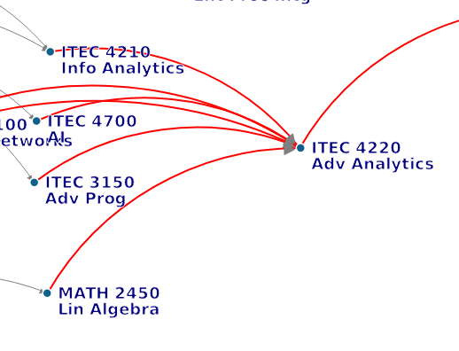

 ## ITEC 4220 - Advanced Data Analytics ### Module 5 - SQL/noSQL data sources #### Cengiz Gunay, Fall 2023
### Good old relational databases: <br> Structured Query Language - SQL has been around for a while - Good for relational data - **Strengths:** Efficient with large data, join operations, expressive query language - **Weaknesses:** Requires data transformation into rigid table structures, not easily distributed Example retrieval query with conditions, grouping, and sorting: ```sql SELECT count(student) FROM MyData WHERE date < 2019 GROUP BY course ORDER BY name DESC; ``` [Basic interactive SQL tutorials](https://sqlzoo.net/)
### An alternative: noSQL data via JSON - JSON: JavaScript Object Notation for describing name-value pairs ```javascript { "name": "Gunay", "room": "W-2117" } ``` - **Strengths**: Simple text format to describe structures, good for streaming - **Weaknesses**: No schema checking, no datatypes, no relationships - More complex example with arrays and nesting: ```javascript [ { "name": "Gunay", "pets": [ { "name": "fluffy", "age": "2"}, { "name": "mike", "type": "dog"} ] }, { "name": "..." } ] ```
### JSON Practice - Watch [introduction to JSON data video](https://courses.edx.org/courses/course-v1:StanfordOnline+SOE.YDB-SSD0001+2T2020/courseware/ch-json_data/seq-vid-json_introduction/?activate_block_id=block-v1%3AStanfordOnline%2BSOE.YDB-SSD0001%2B2T2020%2Btype%40sequential%2Bblock%40seq-vid-json_introduction) - Watch [JSON demo](https://courses.edx.org/courses/course-v1:StanfordOnline+SOE.YDB-SSD0001+2T2020/courseware/ch-json_data/seq-vid-json_demo/?activate_block_id=block-v1%3AStanfordOnline%2BSOE.YDB-SSD0001%2B2T2020%2Btype%40sequential%2Bblock%40seq-vid-json_demo) - Try to get more than 70% in this [JSON Quiz](https://courses.edx.org/courses/course-v1:StanfordOnline+SOE.YDB-SSD0001+2T2020/courseware/ch-json_data/seq-quiz-json/?activate_block_id=block-v1%3AStanfordOnline%2BSOE.YDB-SSD0001%2B2T2020%2Btype%40sequential%2Bblock%40seq-quiz-json) - Next: JSON made data _visualization_ with Javascript convenient
### noSQL databases - Many to choose from: MongoDB, AWS DocumentDB, Cassandra, CouchDB, [more](http://nosql-database.org/) - Online services: mLab, AtlasDB, Firebase - JSON not exclusive to Javascript; pervasive in many languages
### JSON is the de-facto language for API calls - Used a lot for big data, streaming, API lookups - Here is a list of public APIs: [Todmotto](https://github.com/toddmotto/public-apis), [Postman collections](https://explore.postman.com/), [Rapid API](https://rapidapi.com/hub) Example CoinLore cryptocurrency exchange: ```bash curl -sL https://api.coinlore.com/api/tickers/?start=1&limit=10 ``` Result: ```json {"data":[{"id":"488","symbol":"POLY","name":"Polymath", "nameid":"polymath-network","rank":101,"price_usd":"0.088209", "percent_change_24h":"-2.43","percent_change_1h":... ```
### Anatomy of an API call Example CoinLore cryptocurrency exchange: ```bash curl -sL https://api.coinlore.com/api/tickers/?start=1&limit=10 ``` Breakdown: - `https://api.coinlore.com/api` : API base URL - `/tickers` : API endpoint used to get this information - `?` : Starts parameter list - `start=1` : Parameter `start` to return results from 1 - `&` : Separator between parameters - `limit=10` : Parameter to show 10 results only See these terms in the [documentation for Coinlore API](https://www.coinlore.com/cryptocurrency-data-api).
< Home